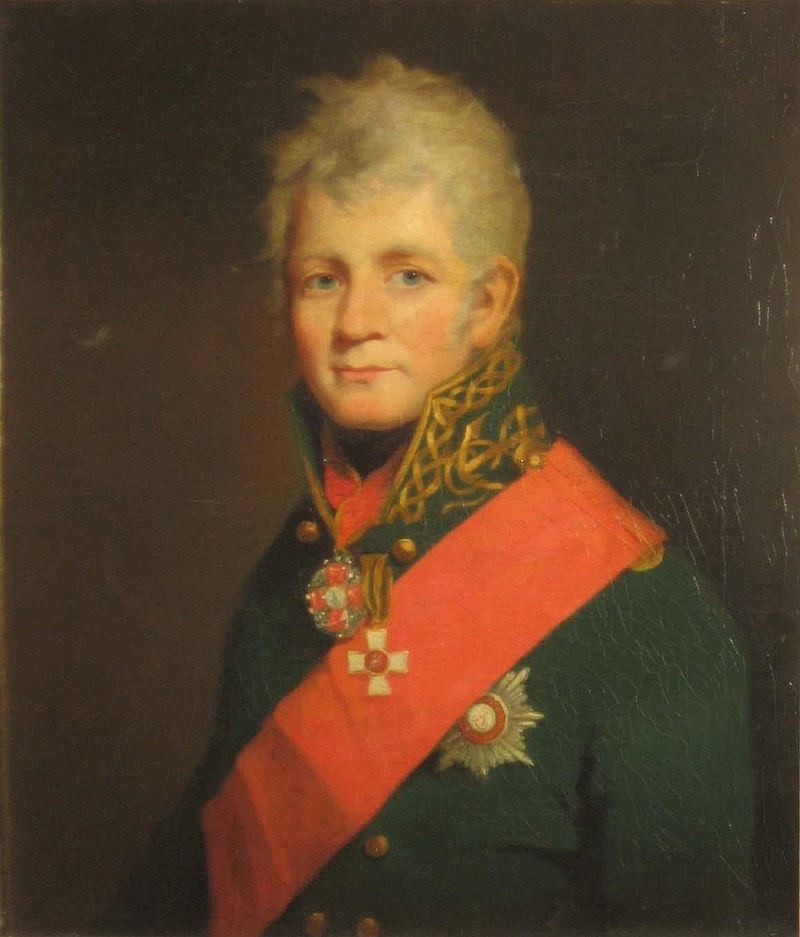
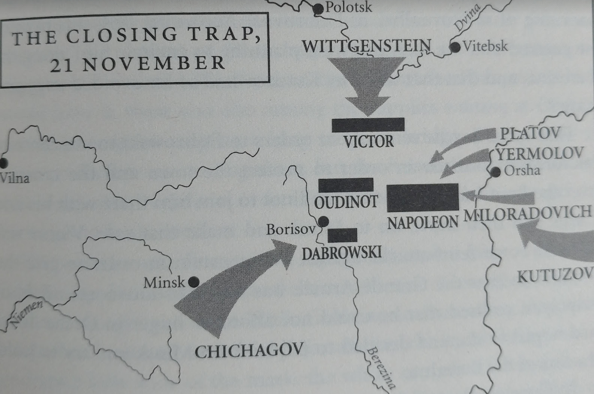
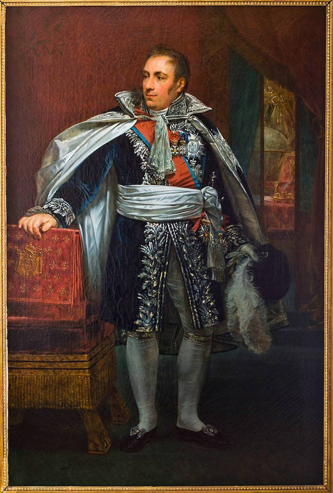

쿠투조프의 빅 픽처 - 베레지나(Berezina)를 향하여
게시: 2021-08-30T06:30:58+09:00
네가 크라스니에서 혈투를 벌이고 있던 11월 18일, 오르샤로 향하던 나폴레옹은 나름대로 생각도 많고 무척 바빴습니다. 오르샤는 단지 중간 경유지일 뿐, 그가 마음 속으로 생각하던 안정적인 겨울 숙영지는 벨라루스의 수도인 민스크(Minsk)였습니다. 개전 초기 다부가 전광석화처럼 점령한 민스크는 도시 전체가 비교적 멀쩡했을 뿐만 아니라, 폴란드와 가깝다보니 스몰렌스크나 비텝스크와는 달리 보급품이 비교적 풍부하게 축적되어 있었기 때문이었습니다. 그러나 민스크로 가기 위해서는 베레지나(Berezina) 강을 건너야 했는데, 베레지나 강을 건널 유일한 다리는 작은 마을인 보리소프(Borisov)에 있는 목제 다리 하나 뿐이었습니다. 보리소프 다리의 중요성을 파악한 나폴레옹은 오르샤를 향해 걷는 고된 길 위에서도 명령을 내려, 후방에서 폴란드 사단을 이끌고 있던 돔브로프스키(Jan Henryk Dąbrowski) 장군에게 보리소프(Borisov)에 병력을 집중하라고 지시했습니다. 또한 폴로츠크(Polotsk)에서 비트겐슈타인(Petr Christianovich Wittgenstein)의 러시아군과 대치하다 후퇴한 우디노(Nicholas Oudinot)의 제2군단에게는 보리소프에 간 뒤 거기서 민스크로 먼저 직행하여 그 곳을 지키라고 명령했습니다.

(돔브로프스키입니다. 그의 이름 Dąbrowski는 다브로프스키라고 읽을 거라고 생각하기 쉬운데 폴란드 알파벳 때문에 폴란드 알파벳 ą는 om 정도로 읽힌다고 합니다. 그의 이름은 프랑스어로도 Henri Dombrowski라고 씁니다. 보나파르트파라기 보다는 철저하게 폴란드 독립주의자였던 그는 나폴레옹 패망 이후 망설이지 않고 폴란드군의 재건을 약속하는 러시아에게 협력했습니다. 지금도 폴란드 국가에는 그의 이름이 나오고, 원래 그 노래의 별칭이 '돔브로프스키의 마주르카'(Mazurek Dąbrowskiego)입니다.) 11월 19일, 오르샤에 도착한 나폴레옹은 낙오병들의 재편성과 각 부대의 배치 등 이것저것 정신없이 명령을 내리던 와중에도 오르샤의 군수품 창고에 보관된 각종 기자재의 목록을 살펴보았습니다. 어떤 것을 끌고 갈지 어떤 것을 버릴지 정해야 했기 때문이었습니다. 나폴레옹의 우선 순위는 어디까지나 대포였습니다. 이는 당장 후퇴 중에도 러시아군과 싸워야 한다는 전술적인 측면도 있었지만 대포를 버리고 가는 것은 패배를 상징하는 것이기 때문이었습니다. 덕분에 모든 대포를 버리고 각 군단들도 오르샤에서 각각 10여문씩의 대포를 지급받을 수 있었습니다. 그러나 대포를 끌려면 말이 필요했고, 따라서 모든 불필요한 장비와 자재 등은 불태우고 버려야 했습니다. 그렇게 버릴 장비를 골라내기 위해 목록을 훑어보던 나폴레옹의 눈에 기묘한 것이 들어왔습니다. 완벽한 한 세트의 조립식 부교가 있었던 것입니다. 나폴레옹은 보리소프의 다리도 확보한 마당에 그건 필요없다고 생각하여 그걸 모두 불태워버리고 부교 세트를 끌던 말들은 모두 대포를 끌도록 하라고 지시했습니다. 딱 3일 후, 나폴레옹은 그 결정을 땅을 치고 후회하게 됩니다만 일단 오르샤에서 배불리 먹고 머스켓 소총 등의 장비도 새로 지급받은 그랑다르메는 일단 기분이 좋았습니다. 특히 바로 그 다음날인 11월 20일 네의 제3군단이 기적적으로 탈출에 성공했다는 소식이 전해지자 나폴레옹을 포함한 전체 그랑다르메는 마치 승전이라도 한 것처럼 기뻐하며 들떴습니다. 나폴레옹은 이때 이미 오르샤를 떠나 보리소프로 가고 있는 중이었습니다만, 바로 그 다음날인 11월 21일 오르샤를 출발할 때도 그랑다르메는 여태까지와는 달리 비교적 사기가 올라간 상태였습니다. 사기가 올라간 이유 중 중요한 것 하나는 날씨가 화창할 뿐만 아니라 다소 포근해졌다는 것이었습니다. 그때까지만 해도 아무도 그것이 곧 엄청난 비극으로 이어질 것이라고 상상하지 못했습니다. 바로 그 다음 날부터 분위기가 좋지 않은 방향으로 흘렀습니다. 보리소프 인근인 톨로친(Tolochin)에 도착한 나폴레옹에게 돔브로프스키가 보낸 전령이 좋지 않은 소식을 들고 온 것입니다. 그 보고서에는 6일 전인 11월 16일 이미 민스크가 치차고프(Pavel Chichagov)의 러시아군에게 함락되었다는 소식이 들어 있었습니다. 이 소식에 나폴레옹은 근래 들어 보기 드물게 큰 충격을 받았습니다. 원래 치차고프는 저 멀리 남쪽 헝가리-루마니아 접경 지대인 우크라이나에서 4만 정도의 몰다비아(Moldavia) 방면군을 이끌고 있었습니다. 그러다 북상하여 토르마소프(Alexander Petrovich Tormasov)가 이끌던 2만 정도의 러시아군과 합류하여 6만 대군이 되었습니다만, 원래 토르마소프를 견제하던 슈바르첸베르크(Karl Philipp, Fürst zu Schwarzenberg) 대공의 오스트리아군 4만이 이들을 견제하게 되어 있었습니다. 그런데 기회주의자 노릇을 하던 오스트리아는 매우 소극적인 작전만을 하다가 나폴레옹이 후퇴를 시작하자 아예 이들로부터 물러나 폴란드 내로 후퇴를 해버린 것입니다.

(개전 초기의 상황입니다. 지도 아래 쪽에 토르마소프와 치차고프의 부대가 보입니다.)

(치차고프 제독입니다. 그는 개전 초기 우크라이나의 루마니아-헝가리 접경 지대에서 군을 이끌고 있었고, '프랑스 제국의 취약한 아랫배'인 발칸반도 방면으로 아예 선제 공격을 하자고 주장하기도 했습니다. 그는 스웨덴과의 전쟁에서 복무한 이후 20대에 영국 해군 대학에서 공부를 했는데, 거기서 Elizabeth Proby라는 영국 아가씨와 사랑에 빠졌습니다. 29세의 나이로 귀국한 그는 즉각 엘리자베스와의 결혼 승인을 요청했는데, 당시 짜르이던 파벨 1세는 "러시아에도 신부감이 넘쳤는데 웬 영국 여자?"라며 거부했습니다. 그러자 이 겁없는 청년은 난동을 부렸고 당연히 즉각 투옥되었습니다. 하지만 젊은이의 패기 넘치는 사랑에는 죄가 없었는지, 그는 또 금새 석방되었을 뿐만 아니라 엘리자베스와의 결혼도 허락을 받았고 더 나아가 해군 준장으로 승진까지 했습니다. 불행히도 엘리자베스는 1811년 사망했고, 늙은 여우 쿠투조프의 원대한 계획에 놀아난 치차고프는 베레지나 전투에서 프랑스군이 빠져나가도록 해줬다는 비난을 받았습니다. 결국 그는 1813년 이후 군을 떠나 프랑스로 가버렸고 두번 다시 러시아로 돌아가지 않았으며 1849년 파리에서 죽었습니다.)

(슈바르첸베르크 대공입니다. 그는 나폴레옹보다 2살 어렸는데, 바로 다음해인 1813년에는 대불 연합군 총사령관으로 드레스덴 전투에 참전했다가 나폴레옹에게 그야말로 참패를 당했습니다. 많이 뽀샵이 들어갔을 이 초상화에서도 드러나듯이 원래 좀 비대한 편이었던 그는 1817년 1차로 뇌졸증을 겪은 바 있었는데, 라이프치히 전투를 기념하기 위해 1820년 라이프치히를 방문했다가 다시 뇌졸증으로 쓰러졌고 결국 거기서 49세의 젊은 나이로 세상을 떴습니다.) 나폴레옹은 그런 사실을 전혀 모르고 있었을까요? 아닙니다. 그도 오스트리아가 다른 마음을 먹고 있다는 것, 그리고 슈바르첸베르크가 후퇴했다는 것도 알고 있었습니다. 그러나 그는 치차고프가 쿠투조프와 합류하여 자신을 공격할 것이라고 생각했지 단독으로 자신의 퇴로를 끊으려 할 줄은 예상하지 못했습니다. 나쁜 일은 혼자 다니지 않는다더니 북쪽에서는 비트겐슈타인의 러시아군이 쳐내려오고 있었습니다. 이건 어느 정도 예상이 되는 부분이었습니다. 비트겐슈타인과 대치하던 우디노의 제2군단을 빼서 민스크로 돌렸으니까요. 나폴레옹은 주로 신병들로 구성된 빅토르의 제9군단을 보내 비트겐슈타인을 견제하도록 해놓고 있었습니다만, 병력 측면에서 절대 열세였으므로 비트겐슈타인이 나폴레옹의 북쪽 측면에서 나타나는 것은 시간 문제였습니다. 그는 북동쪽, 남서쪽, 그리고 남동쪽의 3개 방면에서 포위되고 있었습니다. 일이 어쩌다 이렇게 되었을까요? 실은 이 모든 것은 쿠투조프의 원대한 계획으로 구성된 포위망이었습니다. 그가 말로야로슬라베츠 전투나 크라스니 전투 등에서 부하들의 격렬한 항의에도 불구하고 나폴레옹이 빠져나가도록 반복해서 허용한 것은 결국 베레지나 강변에서 나폴레옹을 훨씬 더 큰 덫에 몰아넣는다는 계획이 있었기 때문이었습니다. 나폴레옹의 그랑다르메는 당시 한여름의 아이스크림 같은 존재였기 때문에 더 멀리 도망가도록 내버려두면 훨씬 더 많이 녹아내릴 것이라고 본 것이었고, 결국 그게 맞았습니다. 굳이 아직 단단해보이는 나폴레옹과 혈투를 벌일 이유가 없으며, 제 아무리 나폴레옹이라고 해도 결국 베레지나 강변에서 포로가 될 수 밖에 없다고 쿠투조프는 판단했던 것입니다. 게다가 여우같은 쿠투조프는 자신을 위해 더 정교한 장치를 준비해놓고 있었습니다. 그는 이렇게 토끼몰이를 하듯 나폴레옹을 몰아세운 뒤 비트겐슈타인과 치차고프에게 막타를 치게 함으로써, 혹시라도 나폴레옹이 포위망을 뚫고 나갈 경우 그 책임을 그 두 장군에게 뒤집어 씌울 생각이었던 것입니다. 다만 쿠투조프의 계획이 조금 틀어진 부분이 있긴 했습니다. 비트겐슈타인에게도 '베레지나 강을 건너 치차고프와 연계하여 나폴레옹의 퇴로를 끊으라'는 명령을 내렸으나 비트겐슈타인은 그 명령을 거부하고 베레지나를 건너지 않은 것입니다. 비트겐슈타인이 이렇게 나온 것은 베레지나를 건널 경우 원래 해군 출신인데다 러시아 귀족 사회에서 좀 아웃사이더이던 치차고프의 명령을 받아야 한다는 것이 싫었고, 거기에 더해 아무래도 쿠투조프처럼 비트겐슈타인도 나폴레옹의 본대와 직접 싸우는 것은 꺼림직했기 때문이었습니다. 그래서 비트겐슈타인은 오로지 빅토르의 아담한 제9군단만 상대하며 시간을 끌고 있었습니다.

(11월 21~22일, 나폴레옹을 토끼몰이하던 러시아군의 포진입니다. 결국 나폴레옹은 쿠투조프라는 이름의 부처님 손아귀에서 놀아나는 손오공에 불과했던 것일까요? Adam Zamoyski의 책에 나오는 지도입니다. )
하지만 그런 작은 일탈에도 불구하고 상황은 나폴레옹에게 절망적이었습니다. 나폴레옹이 오르샤에서 끌고온 전투 병력은 낙오병들을 제외하면 2만 정도에 불과했습니다. 우디노와 돔브로프스키, 빅토르의 병력을 합해도 5만이 넘지 않았습니다. 그에 비해 치차고프의 병력은 민스크에 수비대를 배치한 뒤 보리소프 쪽으로 달려온 것만도 3만2천 정도였습니다. 거기에 비트겐슈타인도 3만, 나폴레옹의 뒤를 바싹 쫓는 밀로라도비치는 2만5천이었으니, 베레지나 강을 등진 나폴레옹 주변에는 총 8만6천이 넘는 러시아군이 포진하고 있었습니다. 무엇보다, 비록 지나치게 천천히 따라오고 있긴 했지만 저 동쪽에서 쿠투조프도 거의 4만에 가까운 본대를 끌고 오고 있었습니다. 민스크 함락 소식과 치차고프가 보리소프 쪽으로 다가온다는 보고가 도착한 11월 22일 밤, 나폴레옹의 임시 처소가 꾸며진 농가에서 그날 숙직을 맡은 뒤록(Duroc) 원수와 행정총감(Intendant) 다뤼(Pierre Antoine Noël Bruno, comte Daru)는 자다깨다를 반복하는 나폴레옹과 이런저런 작전 회의를 하고 있었습니다. 나폴레옹은 여기서 드물게도 사태가 이렇게 된 것에 대해 자신의 멍청함을 자책했다고 합니다. 문득 졸다가 잠에서 깬 나폴레옹은 이 두 사람이 뭔가 속닥이고 있었다는 것을 깨닫고 무슨 말을 하고 있었냐고 물었습니다. 이에 대해 뒤록과 다뤼는 기구(baloon)가 있었으면 좋겠다는 이야기를 하고 있었다고 답했고, 나폴레옹은 뜬금없는 대답에 무엇에 쓰려고 기구가 필요하냐고 물었습니다. 그들은 "폐하를 서쪽으로 날려보낼 수 있도록이요"라고 답했고, 나폴레옹도 "확실히 상황이 좋지는 않다"라고 말했습니다. 실제로 당시 러시아군은 나폴레옹이 변장을 하고서라도 슬쩍 러시아군의 포위망을 뚫고 빠져나갈까봐 우려하고 있었습니다. 11월 19일, 보리소프로 진격하던 치차고프는 나폴레옹의 인상착의를 묘사한 전단을 뿌리며 '이렇게 생긴 프랑스인을 사로 잡으면 무조건 자신에게 데려오라'고 명령을 내릴 정도였습니다.

(다뤼입니다. 프랑스 남부 몽펠리에의 하급 귀족 출신인 그는 원래 어린 나이에 사관학교를 나와 포병 장교로 임관되었으나 야전군 장교보다는 병참 및 행정 업무에 뛰어난 자질을 보여주었고 나폴레옹도 그의 재주와 청빈하고 솔직한 인품을 높이 평가하여 항상 중용했습니다. 마레(Maret)의 뒤를 이어 1811년 국무총리를 지내기도 했던 그는 1812년 이후 기울어가는 나폴레옹 제국을 수습하기 위해 온 힘을 기울였고, 나폴레옹이 퇴위하자 미련없이 은퇴하였습니다. 나폴레옹의 백일천하 때는 당연히 나폴레옹 편에 섰는데, 그 이후에도 부르봉 왕정 하에서 민주주의의 대의를 지키기 위해 애썼습니다.) 그런데 상황은 나폴레옹이 알고 있던 것보다 더 심각했습니다. 그들이 그렇게 존재하지 않는 기구에 대해 이야기하고 있던 11월 22일, 치차고프의 선발대 1만를 이끈 팔렌(Pahlen) 장군이 베레지나 강을 건널 수 있는 유일한 다리가 있던 보리소프를 들이쳐 돔브로프스키의 폴란드군을 격퇴하고 다리와 마을을 모두 손에 넣었던 것입니다. 이제 나폴레옹은 그야말로 독안에 든 뒤 신세가 되었습니다. Source : 1812 Napoleon's Fatal March on Moscow by Adam Zamoyski
https://en.wikipedia.org/wiki/Jan_Henryk_D%C4%85browski
https://en.wikipedia.org/wiki/Pavel_Chichagov
https://en.wikipedia.org/wiki/Karl_Philipp,_Prince_of_Schwarzenberg
https://en.wikipedia.org/wiki/Battle_of_Berezina